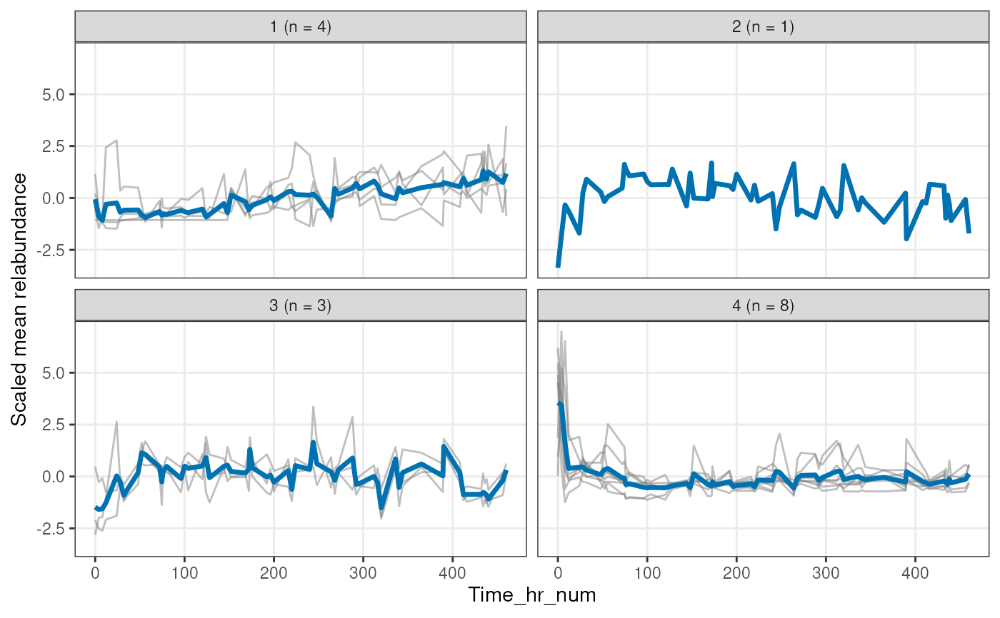
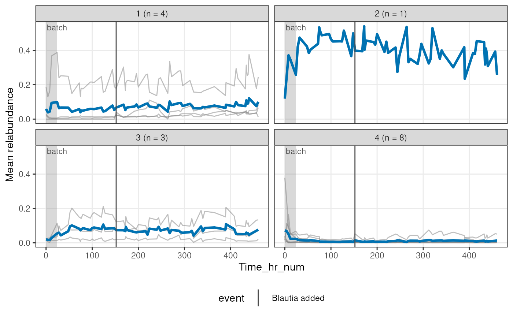

Plot clusters of feature trajectories
Source:R/AllGenerics.R, R/plotProfiles.R, R/zzz-mae.R
plotProfiles.RdplotProfiles() draws one panel per cluster of features. Each
feature is a faint line of its mean value over the samples at each time,
and the mean of these lines in the cluster is a bold line.
Usage
plotProfiles(x, ...)
# S4 method for class 'SummarizedExperiment'
plotProfiles(
x,
time.col,
group = NULL,
assay.type = "counts",
clust.col = "cluster",
features = NULL,
top = NULL,
scale = TRUE,
max.gap = NULL,
events = NULL,
...
)
# S4 method for class 'MultiAssayExperiment'
plotProfiles(x, ..., experiment = 1L)Arguments
- x
a
SummarizedExperimentobject.- ...
additional arguments passed to
geom_linefor the feature lines.- time.col
Character scalar. Specifies the column fromcolData(x)that contains sampling times: numeric,Date,POSIXctor a factor of visits. Time differences, as inmax.gap, are in days forDateand hours forPOSIXcttimes.- group
Character scalar. Specifies the column fromcolData(x)that identifies subjects; it is checked for duplicated subject-time pairs. (Default:NULL)- assay.type
Character scalar. Specifies the assay to plot. (Default:"counts")- clust.col
Character scalar. Specifies the column fromrowData(x)with the cluster of each feature, as written bymia::addCluster(). Features without a cluster (NA) are left out. (Default:"cluster")- features
Character vector. Features to plot. IfNULL, plots thetopfeatures with the largest mean. (Default:NULL)- top
Integer scalar. Number of features to plot whenfeaturesisNULL. IfNULL, plots all features. (Default:NULL)- scale
Logical scalar. Should the mean trajectory of each feature be scaled to mean 0 and standard deviation 1, so that features of different abundance are compared by their shape? (Default:TRUE)- max.gap
Numeric scalar. Breaks the lines where consecutive times are further apart than this, intime.colunits. For visits,NULLbreaks lines at visits without a sample; otherwiseNULLnever breaks lines. (Default:NULL)- events
data.frame. Events or intervals to mark in every panel, one per row, with columnsstartand optionallyendandlabel, in the units oftime.col(visit levels for visits). Rows with anendare drawn as grey bands with their label at the top, the others as vertical lines. (Default:NULL)- experiment
Character scalarorinteger scalar. For aMultiAssayExperiment, the experiment to plot; its samples get thecolDataofx. (Default:1L)
Details
The value of a feature at a time is its mean over all samples at that
time, over subjects and groups alike; with irregular sampling, where
most times have a single sample, give the times as a factor of visits.
The clusters come from upstream, such as a clustering of the features
by mia::addCluster() on a scaled assay; they are drawn in the
order of the levels of clust.col, or sorted. The panel titles
give each cluster and its number of plotted features.
The panels follow the trajectory clusters of Bodein et al. (2019, doi:10.3389/fgene.2019.00963, Figs 6 and 7), where each line is the scaled profile of a feature, and the clusters of taxa responding to a diet in David et al. (2014, doi:10.1186/gb-2014-15-7-r89, Fig 3).
References
Bodein A, et al. (2019). A generic multivariate framework for the integration of microbiome longitudinal studies with other data types. Frontiers in Genetics 10:963.
David LA, et al. (2014). Host lifestyle affects human microbiota on daily timescales. Genome Biology 15(7):R89.
Examples
# 16 species in three bioreactors, clustered by the shape of their
# profiles: hierarchical clustering of the abundances scaled per
# species, cut into four clusters
data("minimalgut", package = "miaTime")
tse <- mia::transformAssay(minimalgut, method = "relabundance")
z <- t(scale(t(SummarizedExperiment::assay(tse, "relabundance"))))
SummarizedExperiment::rowData(tse)$cluster <- factor(
cutree(hclust(dist(z), method = "ward.D2"), k = 4))
plotProfiles(tse, time.col = "Time_hr_num", group = "StudyIdentifier",
assay.type = "relabundance")

# Unscaled relative abundances, with the batch phase and the addition
# of Blautia hydrogenotrophica at 152 h marked
events <- data.frame(start = c(0, 152), end = c(24, NA),
label = c("batch", "Blautia added"))
plotProfiles(tse, time.col = "Time_hr_num", group = "StudyIdentifier",
assay.type = "relabundance", scale = FALSE, events = events)
